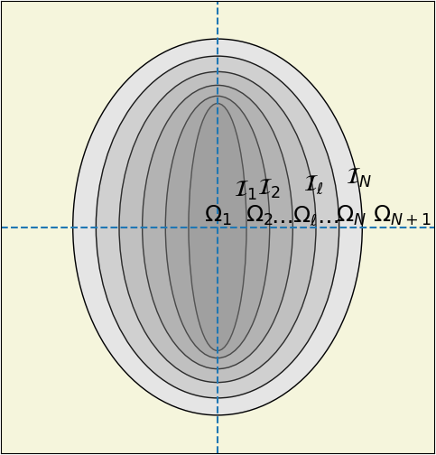

Layered spheroid — confocal harmonic series
LayeredSpheroid is an $N$-layer confocal spheroidal composite inclusion — a core plus concentric confocal shells — embedded in an infinite isotropic matrix, in conduction only (thermal, electric, Darcy). It follows [52], which extends the layered-sphere recurrence of [49] to spheroids.
On a sphere an imperfect interface acts on each harmonic degree independently; on a spheroid it couples them. The sphere's $2\times 2$ transfer per mode therefore becomes a truncated series with a $2\mathcal{N}\times 2\mathcal{N}$ transfer matrix per interface.
Unlike LayeredSphere, there is none. The harmonic decomposition used here is specific to the scalar Laplace equation and does not carry over to the vector elastic problem.
Confocal spheroidal coordinates
Prolate spheroidal coordinates $(\varphi, p, q)$ about the revolution axis $\underline{n}$, with half focal distance $c > 0$:
\[x_1 = c\sqrt{1-p^{2}}\sqrt{q^{2}-1}\,\cos\varphi, \qquad x_2 = c\sqrt{1-p^{2}}\sqrt{q^{2}-1}\,\sin\varphi, \qquad x_3 = c\,p\,q,\]
with $-1\le p\le 1$ and $q\ge 1$. Surfaces of constant $q$ are confocal spheroids — they share the same focal ring, which is what makes the layer geometry consistent — with axial and transverse semi-axes

Confocality is a real constraint, and it has a visible consequence: since $\rho_a^2 - \rho_t^2 = c^2$ is the same for every layer, the inner shells are more elongated than the outer ones. A confocal stack cannot be a set of homothetic shells, and asking for one raises an error at construction. The interactive view in The inclusion zoo shows the effect on a three-layer prolate stack.
\[\rho_a = c\,q, \qquad \rho_t = c\sqrt{q^{2}-1}, \qquad \text{aspect ratio}\quad \varpi = \frac{\rho_a}{\rho_t} = \frac{q}{\sqrt{q^{2}-1}} > 1 .\]
Oblate spheroids ($\varpi < 1$) follow by the formal substitution $c \to -\mathrm{i}\,\bar{c}$, $q \to \mathrm{i}\,\tau$ with $\bar{c}, \tau$ real, giving $\rho_a = \bar{c}\,\tau$ and $\rho_t = \bar{c}\sqrt{\tau^{2}+1}$. Every prolate formula then carries over unchanged, evaluated in complex arithmetic.
LayeredSpheroid exploits this directly: the confocal parameter $q$ is stored as T for a prolate spheroid and Complex{T} for an oblate one, and every downstream routine — Legendre recurrences, coupling integrals, transfer matrices — is written generically over Q <: Number. No branch is ever taken on prolate versus oblate.
Boundary value problem
$N$ confocal layers of isotropic conductivity $k_\ell$, separated by interfaces $\mathcal{I}_\ell$ at $q = q_\ell$ for $\ell = 1,\dots,N$, are embedded in a matrix of conductivity $k_{N+1}$ occupying $q > q_N$, under a remote uniform gradient $\underline{H}$. The temperature in layer $\ell$ expands on spheroidal harmonics,
\[T_\ell = c \sum_{m=0}^{\infty}\sum_{n=m}^{\infty} P_n^m(p)\Bigl[a_{\ell,n}^m\,P_n^m(q) + b_{\ell,n}^m\,Q_n^m(q)\Bigr]\cos(m\varphi) \;+\;(\sin\text{-terms}),\]
where $P_n^m$ and $Q_n^m$ are the associated Legendre functions of the first and second kind. By symmetry the problem splits into two independent ones, solved by identical machinery:
| problem | remote gradient | order | degrees |
|---|---|---|---|
| axial | $\underline{H} = H_3\,\underline{e}_3$ | $m = 0$ | odd only |
| transverse | $\underline{H} = H_1\,\underline{e}_1$ | $m = 1$ | odd only |
An arbitrary remote gradient follows by rotation, the geometry being axisymmetric.
Interface conditions and the coupling matrices
Three interface types are available. Writing $[\![\cdot]\!]$ for the jump across the interface and $q_n$ for the normal flux:
| type | condition | MeanFieldHomogenization | effect on degrees |
|---|---|---|---|
| perfect | $[\![T]\!]=0$, $[\![q_n]\!]=0$ | PerfectInterface | diagonal |
| LC (low-conducting) | $[\![T]\!] = \rho\,q_n$, flux continuous | KapitzaInterface(ρ) | couples all degrees |
| HC (highly-conducting) | $[\![q_n]\!] = -\beta\,\mathrm{div}_S(\nabla_S T)$, temperature continuous | SurfaceConductiveInterface(β) | couples all degrees |
The LC model is the Kapitza thermal contact resistance [53], [54]; the HC model is a highly conducting surface layer [55]. Both are the imperfect-interface models used by [56] and [52].
$\rho$ is a genuine thermal resistance and $\beta$ a genuine surface conductance. This is not the inverse convention carried by some raw echoes interf_prop values for the low-conducting case.
The coupling arises because a non-spherical interface mixes harmonic degrees. Four matrices carry it, defined as integrals over the interface [52]:
\[I_{ij}(q) = \int_{-1}^{1}\frac{P_i(x)\,P_j(x)}{\sqrt{q^{2}-x^{2}}}\,\mathrm{d}x, \qquad J_{ij}(q) = \int_{-1}^{1}\frac{P_i^{1}(x)\,P_j^{1}(x)}{\sqrt{q^{2}-x^{2}}}\,\mathrm{d}x,\]
and similarly $K_{ij}$, $L_{ij}$ for the transverse HC case. The LC interface couples through $I_{ij}$ (axial) or $J_{ij}$ (transverse); the HC interface through $J_{ij}$ (axial) or $K_{ij} + L_{ij}/(q^{2}-1)$ (transverse). They are assembled by coupling_matrices.
Transfer matrices
Truncating at $\mathcal{N}$ terms — odd degrees $1, 3, \dots, 2\mathcal{N}-1$ — the interface condition becomes a linear map between the coefficient vectors $X_\ell = [A_\ell; B_\ell]$ of consecutive layers, $X_{\ell+1} = R_\ell X_\ell$, with
\[R_\ell = \mathcal{J}(k_{\ell+1}, q_\ell)^{-1} \Bigl(\mathcal{J}(k_\ell, q_\ell) + \delta\mathcal{J}\Bigr), \qquad \mathcal{J}(k,q) = \begin{pmatrix} \mathcal{J}_P(q) & \mathcal{J}_Q(q)\\ k\,\mathcal{J}_{P'}(q) & k\,\mathcal{J}_{Q'}(q) \end{pmatrix},\]
where $\mathcal{J}_R(q) = \mathrm{diag}\bigl(R_1(q), R_3(q), \dots, R_{2\mathcal{N}-1}(q)\bigr)$ is diagonal for each of $R \in \{P, Q, P', Q'\}$, and $\delta\mathcal{J}$ is the interface perturbation: full $\mathcal{N}\times\mathcal{N}$ blocks built from the coupling matrices above, perturbing the temperature half of $\mathcal{J}$ for an LC interface and the flux half for an HC one. A perfect interface has $\delta\mathcal{J} = 0$, and only then is $R_\ell$ diagonal.
Accumulating $S_\ell = R_\ell\cdots R_1$, imposing regularity at the core ($B_1 = 0$) and the unit remote field ($A_{N+1} = (\pm 1, 0, \dots, 0)$, $+$ axial, $-$ transverse) determines every layer's coefficients. This is what spheroid_state_sequence computes, and what local_temperature, local_gradient and local_flux reconstruct pointwise from.
Volume-averaged concentration tensors
For homogenization only two order-2 tensors are needed. They are defined by the volume averages over the whole particle $\Omega$ of the gradient and of the flux, under a remote gradient $\underline{H}$:
\[\boxed{\; \bigl\langle \nabla T \bigr\rangle_\Omega = \boldsymbol{A}_\Omega\cdot\underline{H}, \qquad \bigl\langle \boldsymbol{K}\cdot\nabla T \bigr\rangle_\Omega = \boldsymbol{B}_\Omega\cdot\underline{H}. \;}\]
$\boldsymbol{A}_\Omega$ is the concentration tensor — how much of the remote gradient the particle actually sees — and $\boldsymbol{B}_\Omega$ the corresponding flux average. Note which flux: the averaged quantity is $\boldsymbol{K}\cdot\nabla T = \boldsymbol{\sigma} \equiv -\underline{q}$, the stress analog of the package (see Elasticity and transport: one set of formulas), so $\boldsymbol{B}_\Omega$ is the exact twin of the elastic $\mathbb{B}_\Omega$ with no sign to remember. Both are transversely isotropic, diagonal in the spheroid's own frame, and returned as TensND.TensTI{2,3}.
Remarkably, they depend on the whole layered structure only through the single ratio $(b/a) = b^{0/1}_{N+1,1}/a^{0/1}_{N+1,1}$ of the leading coefficients at the outer boundary $q_N$, together with four shape functions [52]:
\[\mathcal{T}_a(q) = \frac{Q_1(q)}{q} = \operatorname{arccoth}q - \frac{1}{q}, \qquad \mathcal{T}_t(q) = \frac{Q_1^{1}(q)}{\sqrt{q^{2}-1}} = \operatorname{arccoth}q - \frac{q}{q^{2}-1},\]
\[\mathcal{U}_a(q) = Q_1'(q) = \operatorname{arccoth}q - \frac{q}{q^{2}-1} = \mathcal{T}_t(q), \qquad \mathcal{U}_t(q) = \operatorname{arccoth}q + \frac{2-q^{2}}{q\,(q^{2}-1)} .\]
The coincidence $\mathcal{U}_a = \mathcal{T}_t$ is genuine, not a typo: both equal $Q_1'(q)$. Writing $\alpha$ for the axial and $t$ for the transverse component, and $(b/a)|_a$, $(b/a)|_t$ for the corresponding coefficient ratios,
\[\boldsymbol{A}_\Omega = \mathrm{diag}\Bigl( 1 + \tfrac{b}{a}\big|_t\,\mathcal{T}_t(q_N),\; 1 + \tfrac{b}{a}\big|_t\,\mathcal{T}_t(q_N),\; 1 + \tfrac{b}{a}\big|_a\,\mathcal{T}_a(q_N)\Bigr),\]
\[\boldsymbol{B}_\Omega = k_{N+1}\,\mathrm{diag}\Bigl( 1 + \tfrac{b}{a}\big|_t\,\mathcal{U}_t(q_N),\; 1 + \tfrac{b}{a}\big|_t\,\mathcal{U}_t(q_N),\; 1 + \tfrac{b}{a}\big|_a\,\mathcal{U}_a(q_N)\Bigr).\]
These are gradient_gradient_loc and flux_gradient_loc.
Like LayeredSphere, a layered spheroid has no Hill tensor — it is not a homogeneous ellipsoid, so $\mathbb{P}$ does not exist for it. It plugs into the mean-field schemes through $\boldsymbol{A}_\Omega$ and $\boldsymbol{B}_\Omega$ directly, and satisfies the same invariant as the sphere for the size-independent contribution, $\boldsymbol{N}_K = \boldsymbol{B}_\Omega - \boldsymbol{K}_0\cdot\boldsymbol{A}_\Omega$.
Equivalent particle
[52] (§4) define the equivalent particle: the homogeneous, perfectly bonded spheroid of the same shape that homogenizes identically. Its conductivity is
\[\boxed{\; \boldsymbol{k}^{eq} = \boldsymbol{B}_\Omega\cdot\boldsymbol{A}_\Omega^{-1} \;}\]
with $\boldsymbol{A}_\Omega$ and $\boldsymbol{B}_\Omega$ as defined just above. Unlike a homogeneous perfect-interface spheroid — whose response depends on shape only — $\boldsymbol{k}^{eq}$ is size-dependent, because an imperfect interface introduces a length scale ($\rho$ and $\beta$ are not dimensionless). Demonstrated in scripts/34_spheroid_equivalent_conductivity.jl.
When every interface is perfect, only degree 1 survives, the coupling matrices drop out, and $\boldsymbol{k}^{eq}$ reduces to the closed-form nested recursion of the paper's §3 — built from the classical conduction depolarization factors already available through tens_IA and hill_tensor for a single spheroid. That closed form is used as an exact oracle in test/LayeredSpheroids/test_conductivity.jl.
Numerical precision: quadrature, not the monomial series
The reference implementation of [52] computes $I$, $J$, $K$, $L$ by expanding the products $P_i(x)P_j(x)$ into monomials, with coefficients $\gamma, \eta, \delta$ built by the recursions of the paper's appendix, and summing against
\[W_k(q) = \int_{-1}^{1}\frac{x^{2k}}{\sqrt{q^{2}-x^{2}}}\,\mathrm{d}x\]
(closed form via ${}_2F_1$). This is numerically ill-conditioned: the monomial coefficients of a degree-$n$ Legendre polynomial grow like $10^{0.8n}$, while $I_{ii}(q) = O(1/n)$. The summation $I_{ij} = \sum_k \gamma_{2k}\,W_k(q)$ must therefore cancel terms of size $10^{0.8n}$ down to a result of size $O(1/n)$. The paper's own rule of thumb — a working precision of about $0.8\,(2\mathcal{N}-1)$ decimal digits — is exactly this cancellation bound, and is why the reference implementation needs mpmath arbitrary precision once $\mathcal{N}\gtrsim 10$.
MeanFieldHomogenization integrates the definitions above directly by Gauss quadrature (QuadGK), evaluating $P_i(x)$, $P_i^{1}(x)$ and their derivatives through the stable three-term recurrence, never through the monomial expansion:
coupling_matrices(q, Nseries; method = :quadrature) # default
coupling_matrices(q, Nseries; method = :series) # BigFloat validation oracleThe integrand is smooth and bounded on $[-1,1]$ for a prolate $q$, and complex-analytic with no real singularity for an oblate $q = \mathrm{i}\tau$: Float64 quadrature reaches machine precision for any $\mathcal{N}$. The BigFloat port of the monomial series is kept as an independent oracle (test/LayeredSpheroids/test_coupling.jl, scripts/33_spheroid_series_convergence.jl).
Integration with the schemes
LayeredSpheroid is wired into the schemes exactly like LayeredSphere (see Layered sphere and src/LayeredSpheres/scheme_integration.jl for the elastic and conduction analogues): it declares is_homogeneous_inclusion = false and overrides gradient_gradient_loc, flux_gradient_loc and conductivity_contribution. Every dilute, Mori–Tanaka, self-consistent, Maxwell and differential kernel then routes through the confocal transfer-matrix solution with no change to src/Schemes/.